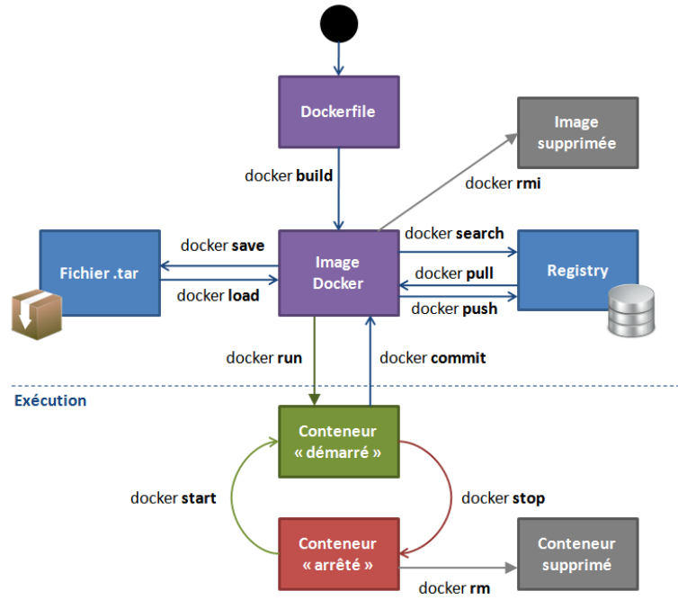

<!DOCTYPE html>
<html lang="en">

<head>
    <meta charset="utf-8" />
    <meta name="viewport" content="width=device-width, initial-scale=1.0, maximum-scale=1.0, user-scalable=no" />

    <title>Containers & Docker</title>
    <link rel="shortcut icon" href="./favicon.ico" />
    <link rel="stylesheet" href="./dist/reveal.css" />
    <link rel="stylesheet" href="./static/css/reset.css" />
    <link rel="stylesheet" href="./static/css/evo.css" />
    <!-- <link rel="stylesheet" href="/_assets/evo" id="theme" /> -->
    <link rel="stylesheet" href="./css/highlight/vs.css" />

    <link rel="stylesheet" href="././_assets/static/css/evo.css" />
    <link rel="stylesheet" href="././_assets/static/css/reset.css" />

</head>

<body>
    <div class="reveal">
        <div class="slides"><section ><section data-markdown><script type="text/template">

## From Virtualisation to Containerisation


</script></section><section data-markdown><script type="text/template">

### Outline

* **Presentation** (45m)
* **Self-paced Workshop** (2h15)
* BE Cloud & Docker (23/11)
* To be continued with Orchestration & Deployment (08/01)

</script></section><section data-markdown><script type="text/template">

#### This class will be successful if you understand

* why we need a tool like docker
* the basics of docker (containers, images) <!-- .element: class="fragment" data-fragment-index="1" -->
* the basics of a container registry <!-- .element: class="fragment" data-fragment-index="2" -->
* how to pull an image and run a container <!-- .element: class="fragment" data-fragment-index="3" -->
* what a Dockerfile looks like <!-- .element: class="fragment" data-fragment-index="4" -->

</script></section></section><section ><section data-markdown><script type="text/template">

### The need for Containers in software


</script></section><section data-markdown><script type="text/template">

#### IT Multimodality


</script></section><section data-markdown><script type="text/template">

#### The Matrix From Hell


</script></section><section data-markdown><script type="text/template">

#### Analogy


</script></section><section data-markdown><script type="text/template">

#### Solution ?


</script></section><section data-markdown><script type="text/template">

#### Solution !


</script></section><section data-markdown><script type="text/template">


</script></section><section data-markdown><script type="text/template">

 <!-- .element: height="60%" width="60%" -->

</script></section></section><section ><section data-markdown><script type="text/template">


</script></section><section data-markdown><script type="text/template">

Docker is **a** solution that **standardizes** packaging and execution of software in isolated
 environments
 (**containers**) that share resources and can communicate between themselves

> Build, Share, and Run Any App, Anywhere

</script></section><section data-markdown><script type="text/template">

[Docker](https://www.docker.com/)

* Created in 2013
* Open Source
* Not a new idea but set a new standard
* Docker is a company built around its main product (Docker Engine)
* in charge of dev of everything docker + additional paid services (Docker hub...)

</script></section><section data-markdown><script type="text/template">

Docker is not the only solution for containers

<https://chimeracoder.github.io/docker-without-docker/#30>

<https://podman.io/>

</script></section><section data-markdown><script type="text/template">

Docker is some fancy tech over linux kernel capabilities (containers)


[more info](https://medium.com/@goyalsaurabh66/docker-basics-cb006b9be243)

</script></section><section data-markdown><script type="text/template">

But Docker is available on [Windows and MacOS](https://www.docker.com/products/docker-desktop) !

 <!-- .element: height="50%" width="50%" -->

</script></section><section data-markdown><script type="text/template">

  <!-- .element: height="40%" width="40%" -->

https://www.youtube.com/c/AurelieVache/videos

</script></section></section><section ><section data-markdown><script type="text/template">

### Containers or Virtual Machines

</script></section><section data-markdown><script type="text/template">

#### Similarities

* Isolated environments for applications
* Movable between hosts

</script></section><section data-markdown><script type="text/template">

#### Drawbacks of VMs

* VM Contains full OS at each install => Install + Resource overhead
* VM needs pre-allocation of resource for each VM (=> Waste if not used)
* Communication between VM <=> Communication between computers

</script></section><section data-markdown><script type="text/template">

#### Container vs Virtual Machine


</script></section><section data-markdown><script type="text/template">

#### Why are docker containers lightweight ?


</script></section><section data-markdown><script type="text/template">

#### Container vs Virtual Machine, an Analogy


</script></section><section data-markdown><script type="text/template">

#### Resources allocation in containers

* Containers share underlying OS / Kernels
* The container engine can allocate resources (CPU, Storage, RAM) on the fly (!= VM)
* GPU is way easier to manage / share with containers


</script></section><section data-markdown><script type="text/template">

#### Some drawbacks of containers

* Containers are based on linux tech  
  (Docker makes Windows container possible though)
* Isolation is not perfect since containers share underlying kernels (security and stability)

</script></section></section><section ><section data-markdown><script type="text/template">

### Containers for Data Science

</script></section><section data-markdown><script type="text/template">

#### Multiple People


</script></section><section data-markdown><script type="text/template">

#### Complex Workflows

 <!-- .element: height="40%" width="40%" -->

</script></section><section data-markdown><script type="text/template">

#### Multiple Components

 <!-- .element: height="40%" width="40%" -->

</script></section><section data-markdown><script type="text/template">

#### Data Science is about reproducibility

* Experimental science
* Communicating results
* Hands-out to other teams
* Deployment and versioning of models

</script></section><section data-markdown><script type="text/template">

#### So... containers ?

* ... for deployment
* ... for standardized development environments
* ... dependency management
* ... for complex / large scale workflows

~it works on my notebook !~ *here's the model ready to run !*

</script></section><section data-markdown><script type="text/template">

Reproducible development environment

  <!-- .element: height="55%" width="55%" -->

</script></section><section data-markdown><script type="text/template">

Codespace is actally a container...


</script></section><section data-markdown><script type="text/template">

Reproducible development environment [at scale](https://medium.com/netflix-techblog/scheduling-notebooks-348e6c14cfd6) !


</script></section><section data-markdown><script type="text/template">

[Netflix and notebook scheduling](https://medium.com/netflix-techblog/scheduling-notebooks-348e6c14cfd6)

  <!-- .element: height="55%" width="55%" -->

</script></section><section data-markdown><script type="text/template">

[Netflix and notebook scheduling](https://medium.com/netflix-techblog/scheduling-notebooks-348e6c14cfd6)


</script></section><section data-markdown><script type="text/template">

https://www.kubeflow.org/

 <!-- .element: height="55%" width="55%" -->

</script></section><section data-markdown><script type="text/template">

https://polyaxon.com/

 <!-- .element: height="55%" width="55%" -->

</script></section></section><section ><section data-markdown><script type="text/template">

### Using Docker in practice


</script></section><section data-markdown><script type="text/template">

#### Vocabulary of Docker

* **Layer**: Set of read-only files to provision the system
* **Image**: Read-Only layer "snapshot" (or blueprint) of an environment. 
* **Images**: can inherit from other **Images**. Images must have a *name* and a *tag*
* **Container**: Read-Write instance of an **Image**
* **DockerFile**: Description of the process used to build an Image
* **Container Registry**: Repository of Docker Images
* **Dockerhub**: The main container registry of docker.com

</script></section><section data-markdown><script type="text/template">

#### Workflow

 <!-- .element: height="55%" width="55%" -->

</script></section><section data-markdown><script type="text/template">

#### Layers, Container, Image

 <!-- .element: height="45%" width="45%" -->

</script></section><section data-markdown><script type="text/template">

#### Image


</script></section><section data-markdown><script type="text/template">

#### Layer / Image Analogy

Docker:
```Dockerfile
FROM python:3.6
RUN pip install torch
CMD ipython
```

```bash
docker build -f Dockerfile -t my-image:1.0 .
docker run my-image
```

Python:
```python
class BaseImage:
    def __init__(self, a):
       self.a = a

class NewImage(BaseImage):
    def __init__(self, a, b):
       super(NewImage, self).__init__(a=a)
       self.b = b

container = NewImage(a=0,b=1)
```

</script></section><section data-markdown><script type="text/template">

#### Layer / Image Analogy

 <!-- .element: height="40%" width="40%" -->

</script></section><section data-markdown><script type="text/template">

#### Dockerfile

* Used to build Images

```Dockerfile
FROM python:3.7
ENV MYVAR="HELLO"
RUN pip install torch
COPY my-conf.txt /app/my-conf.txt
ADD my-file.txt /app/my-file.txt
EXPOSE 9000
WORKDIR "/WORKDIR"
USER MYUSER
ENTRYPOINT ["/BIN/BASH"]
CMD ["ECHO” , "${MYVAR}"]
```

```bash
docker build -f Dockerfile -t my-image:1.0 .
docker run my-image
```

* Reproducible (if you include static data)
* Can be put under version control (simple text file)

</script></section><section data-markdown><script type="text/template">

#### Architecture


</script></section><section data-markdown><script type="text/template">

#### Registry

* Local registry: All images/containers in your machine
* https://hub.docker.com/
* GCP Container Registry
* Social Dimension (share docker images to speed up development/deployment)

</script></section><section data-markdown><script type="text/template">

#### In practice



</script></section><section data-markdown><script type="text/template">

### What about multi-applications containers ?

</script></section><section data-markdown><script type="text/template">

#### Docker Compose

* Multi-containers application with networking (communication)
* "Glue" for complex applications and microservices


</script></section><section data-markdown><script type="text/template">

#### Docker Compose (example)

A database and a webapp

```yaml
version: '3'

services:
  app:
    build: .
    image: takacsmark/flask-redis:1.0
    environment:
      - FLASK_ENV=development
    ports:
      - 5000:5000

  redis:
    image: redis:4.0.11-alpine
```

`docker-compose up` starts both images (you will see that next week)

</script></section><section data-markdown><script type="text/template">

#### Remember this !


</script></section><section data-markdown><script type="text/template">

### An analogy...


[https://bernhardwenzel.com/2022/the-mental-model-of-docker-container-shipping/](https://bernhardwenzel.com/2022/the-mental-model-of-docker-container-shipping/)

</script></section></section><section ><section data-markdown><script type="text/template">

### Docker and GCP

</script></section><section data-markdown><script type="text/template">

#### GCP & Docker

* The per-project dockerhub is called [Container Registry](https://cloud.google.com/container-registry/) 
* Your images look like this `eu.gcr.io/project-id/a/b/c:1.0`
* You can use [Google Cloud Build](https://cloud.google.com/cloud-build/) to build dockerfiles remotely 
* `gcloud builds submit --tag gcr.io/[PROJECT_ID]/quickstart-image .`
* To use gcloud with docker: `gcloud auth configure-docker`
* You can even deploy ["virtual machines" with containers directly](https://cloud.google.com/compute/docs/containers)

</script></section></section><section ><section data-markdown><script type="text/template">

### Demo time

</script></section><section data-markdown><script type="text/template">

#### bonus : play-with-docker

* You need to have a docker hub account : https://hub.docker.com/
* https://labs.play-with-docker.com/
* Free, interactive, cluster of vms to experiment docker with
* https://training.play-with-docker.com/ lots of resoures !

</script></section><section data-markdown><script type="text/template">


</script></section></section><section ><section data-markdown><script type="text/template">

### Cheatsheets

</script></section><section data-markdown><script type="text/template">

 <!-- .element: height="60%" width="60%" -->

</script></section><section data-markdown><script type="text/template">

  <!-- .element: height="60%" width="60%" -->

</script></section><section data-markdown><script type="text/template">

#### Dockerfile : Description d'une image

```Dockerfile
FROM python:3.7
ENV MYVAR="HELLO"
RUN pip install torch
COPY my-conf.txt /app/my-conf.txt
ADD my-file.txt /app/my-file.txt
EXPOSE 9000
WORKDIR "/WORKDIR"
USER MYUSER
ENTRYPOINT ["/BIN/BASH"]
CMD ["ECHO” , "${MYVAR}"]
```

```bash
docker build -f Dockerfile -t my-image:1.0 .
docker run my-image
```

</script></section><section data-markdown><script type="text/template">

#### Images

```text
"docker search" sur un registry
    public (DokerHub)
    privé (entreprise)
"docker build" à partir d'un Dockerfile
"docker commit" sur un conteneur modifié
"docker import" d'une arbo de base :

cat centos6-base.tar | docker import - centos6-base
```

</script></section><section data-markdown><script type="text/template">

#### Docker CLI

```text
    docker create   : crée un conteneur
    docker run      : crée et démarre un conteneur
    docker stop     : arrête un conteneur
    docker start    : démarre un conteneur
    docker restart  : redémarre un conteneur
    docker rm       : supprime un conteneur
    docker kill     : envoie un SIGKILL au conteneur
    docker attach   : se connecte à un conteneur en exécution 
    docker exec     : exécute une cmd dans un conteneur
```

</script></section><section data-markdown><script type="text/template">

#### Docker run

```text
-d, --detach       Run container in background and print ID
-e, --env=[]       Set environment variables
-i, --interactive  Keep STDIN open even if not attached
-p, --publish=[]   Publish a container's port(s) to the host
--rm        5_orchestration       Automatically rm container when it exits
-t, --tty          Allocate a pseudo-TTY
-v, --volume=[]    Bind mount a volume
-w, --workdir      Working directory inside the container
```</script></section></section></div>
    </div>
    <!-- <div id="footer-container" style="display:none;"> -->
    <div id="footer-container">
        <div id="footer">
            Tools of Big Data
            <br />
            <a href="https://supaerodatascience.github.io/deep-learning/">https://supaerodatascience.github.io/DE/</a>
            <br />
            <a rel="license" href="http://creativecommons.org/licenses/by-sa/4.0/"></a>
        </div>
    </div>
    <script src="./dist/reveal.js"></script>

    <script src="./plugin/markdown/markdown.js"></script>
    <script src="./plugin/highlight/highlight.js"></script>
    <script src="./plugin/zoom/zoom.js"></script>
    <script src="./plugin/notes/notes.js"></script>
    <script src="./plugin/math/math.js"></script>
    <script>
        function extend() {
            var target = {};
            for (var i = 0; i < arguments.length; i++) {
                var source = arguments[i];
                for (var key in source) {
                    if (source.hasOwnProperty(key)) {
                        target[key] = source[key];
                    }
                }
            }
            return target;
        }

        // default options to init reveal.js
        var defaultOptions = {
            controls: true,
            progress: true,
            history: true,
            center: true,
            transition: 'default', // none/fade/slide/convex/concave/zoom
            plugins: [
                RevealMarkdown,
                RevealHighlight,
                RevealZoom,
                RevealNotes,
                RevealMath
            ]
        };

        // options from URL query string
        var queryOptions = Reveal().getQueryHash() || {};

        var options = extend(defaultOptions, {"transition":"fade","transitionSpeed":"default","controls":true,"slideNumber":true,"width":"100%","height":"100%"}, queryOptions);
    </script>


    <script>
        Reveal.initialize(options);
        var footer = $('#footer-container').html();
        $('div.reveal').append(footer);
        var logo = $('#logo-container').html();
        $('div.reveal').append(logo);
    </script>
</body>

</html>
